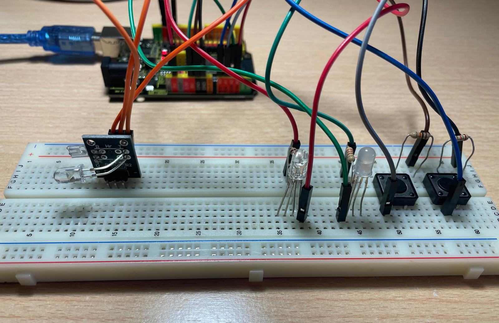
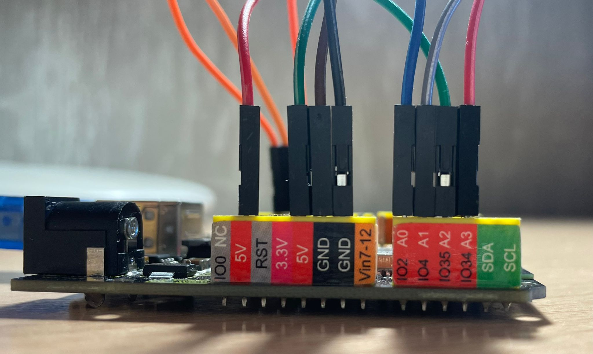
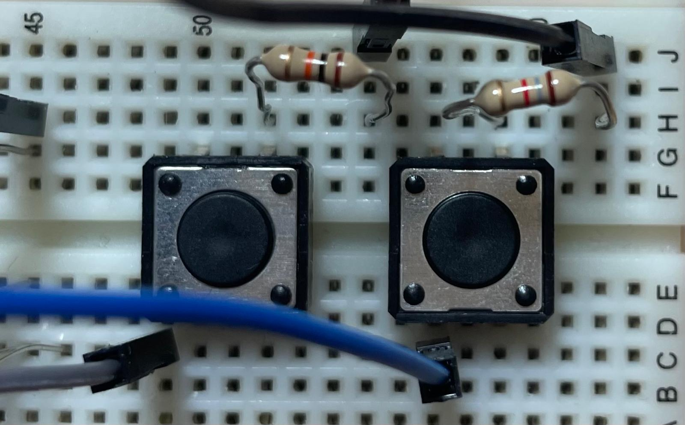
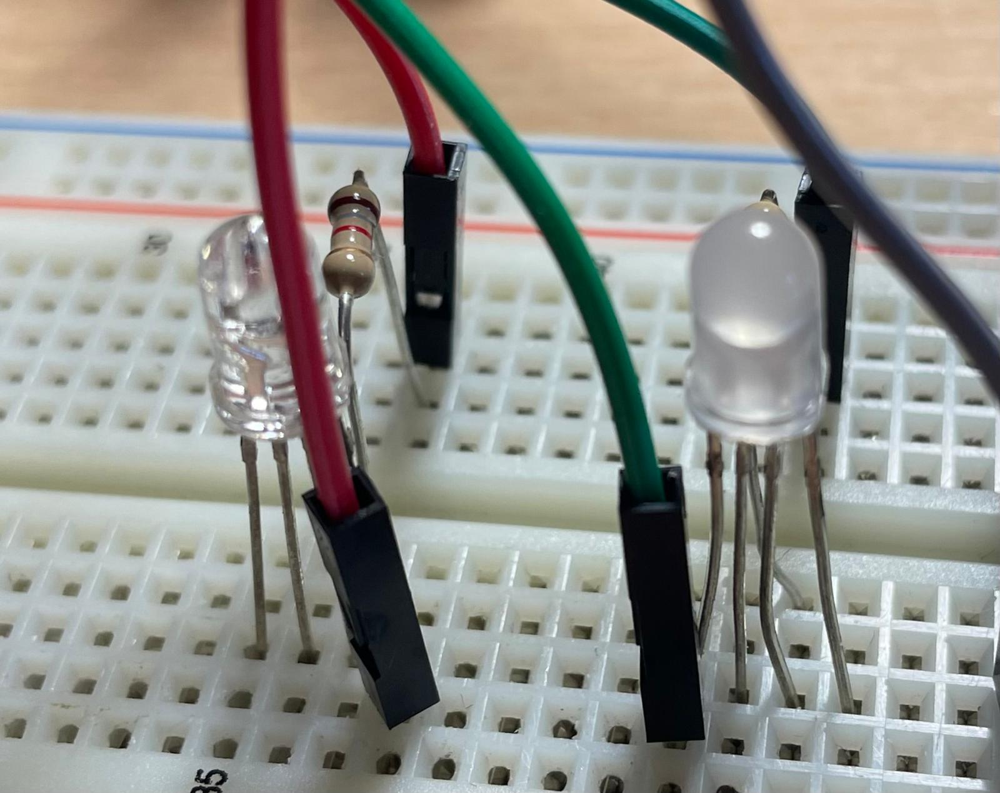
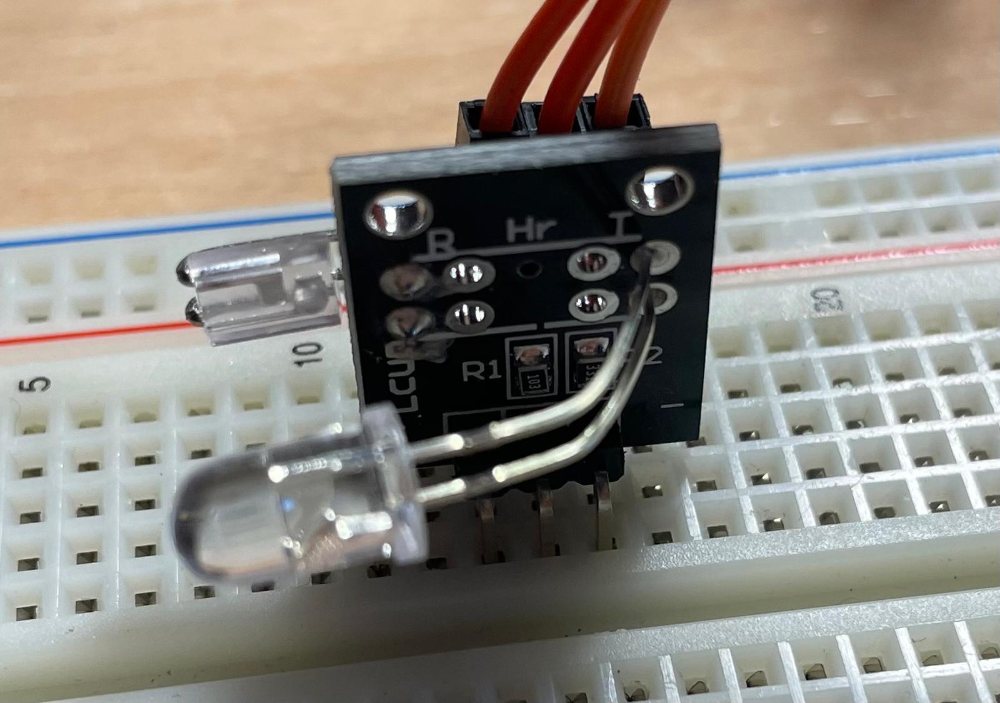
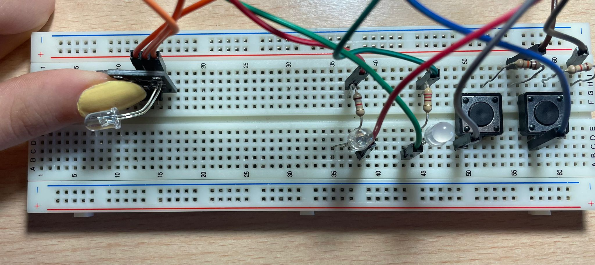

<!DOCTYPE html> 
<html lang="ca">
<head>
  <meta charset="UTF-8" />
  <meta name="viewport" content="width=device-width, initial-scale=1.0" />
  <title>Web d'Oscar</title>
  <link href="https://fonts.googleapis.com/css2?family=Rubik:wght@400;600&display=swap" rel="stylesheet">
  <style>
    body {
      margin: 0;
      font-family: 'Rubik', sans-serif;
      background: linear-gradient(145deg, #0a0a0a, #1f012f);
      color: #e0caff;
      overflow-x: hidden;
    }

    header {
      background: #1a002e;
      padding: 1rem 2rem;
      display: flex;
      align-items: center;
      justify-content: space-between;
      box-shadow: 0 0 20px #9000ff;
      border-bottom: 1px solid #6400a8;
    }

    .brand {
      display: flex;
      align-items: center;
      gap: 10px;
    }

    .logo {
      height: 50px;
    }

    .brand-text {
      color: #c46bff;
      font-size: 1.2rem;
      font-weight: bold;
      text-decoration: none;
    }

    nav {
      display: flex;
      gap: 1rem;
    }

    nav a {
      color: #e0caff;
      text-decoration: none;
      font-weight: bold;
      position: relative;
    }

    nav a:hover {
      text-decoration: underline;
    }

    .dropdown {
      position: relative;
    }

    .dropdown-content {
      display: none;
      position: absolute;
      background-color: #32004d;
      min-width: 180px;
      box-shadow: 0px 8px 16px 0px rgba(0,0,0,0.3);
      z-index: 1;
    }

    .dropdown-content a {
      display: block;
      padding: 0.75rem 1rem;
      color: #e0caff;
      text-decoration: none;
    }

    .dropdown-content a:hover {
      background-color: #4c0070;
    }

    .dropdown:hover .dropdown-content {
      display: block;
    }

    main {
      max-width: 900px;
      margin: 2rem auto;
      padding: 2rem;
      background: rgba(40, 0, 60, 0.25);
      border-radius: 20px;
      box-shadow: 0 0 25px #610094;
    }

    h1 {
      text-align: center;
      color: #f2d6ff;
    }

    footer {
      text-align: center;
      color: #9966cc;
      padding: 2rem 0;
      font-size: 0.9rem;
      border-top: 1px solid #330033;
    }
  </style>
</head>

<body>
  <header>
    <div class="brand">
      <a href="https://agora.xtec.cat/ies-pompeu-fabra-martorell/">
        
      </a>
      <a href="https://omesa4.github.io/" class="brand-text">Web d'Oscar</a>
    </div>

    <nav>
      <a href="https://omesa4.github.io/">Inici</a>

      <div class="dropdown">
        <a href="#">Robòtica ▾</a>
        <div class="dropdown-content">
          <a href="https://omesa4.github.io/robotica/cdirecta/index.html">Cinemàtica directa</a>
          <a href="https://omesa4.github.io/robotica/cinversa/index.html">Cinemàtica inversa</a>
          <a href="https://omesa4.github.io/robotica/arduino/index.html">Teoria</a>
          <a href="https://omesa4.github.io/robotica/arduino/configuracio/index.html">Configuració</a>
          <a href="https://omesa4.github.io/robotica/arduino/programacio/index.html">Programació</a>
          <a href="https://omesa4.github.io/robotica/arduino/musica/index.html">Música</a>
          <a href="https://omesa4.github.io/robotica/final/index.html">Projecte Final</a>
        </div>
      </div>

      <div class="dropdown">
        <a href="#">Programació ▾</a>
        <div class="dropdown-content">
      <a href="https://omesa4.github.io/cara/index.html"> Cares</a>
      <a href="https://omesa4.github.io/we_pray/index.html"> We Pray</a>
      <a href="https://omesa4.github.io/coldplay/index.html"> ColdPlay</a>
      <a href="https://omesa4.github.io/astronomia/index.html"> Astronomia</a>
      <a href="https://omesa4.github.io/Obra%20d'Art/index.html"> Obra d'art</a>
      </div>
      </div>
    </nav>
  </header>

<!-- Contingut principal -->
  <main>
    <h1> Projecte final</h1>

    <div class="projectes">
      <div class="projecte">
        <p> Per començar a treballar vam escollir una cancó cadascú. Jo he triat la de Angry birds, i la meva companya de projecte, Carla, ha triat la de Harry potter.</p>
        <p> Després de buscar la partitura i les tons de les notes en Arduino vam establir les variables de les notes i la duració d'aquestes (tot dins d'arrays)</p>
     <main>   
<pre><class="text" onclick="copyCode(this)"><i class="fas fa-copy"></i><code class="language-arduino">
void setup()
{
  tone(4, 500);
}

void loop() {
     #define NOTE_C 261.626 //DO
     #define NOTE_D 293.665 //RE
     #define NOTE_E 329.628 //MI
     #define NOTE_F 349.228 //FA
     #define NOTE_G 391.995 //SOL
     #define NOTE_A 440.000 //LA
     #define NOTE_B 493.883 //SI
     #define NOTE_S 000.000 //SILENCI
int angrybirds[]{
    NOTE_E,NOTE_F,NOTE_G,NOTE_,NOTE_,NOTE_,NOTE_,NOTE_,NOTE_,NOTE_,NOTE_,NOTE_,NOTE_,NOTE_,NOTE_,NOTE_,NOTE_,NOTE_,NOTE_,NOTE_,NOTE_,NOTE_,
    NOTE_,NOTE_,NOTE_,NOTE_,NOTE_,NOTE_,NOTE_,NOTE_,NOTE_,NOTE_,NOTE_,NOTE_,NOTE_,NOTE_,NOTE_,NOTE_,NOTE_,NOTE_,NOTE_,NOTE_,NOTE_,NOTE_,
    NOTE_,NOTE_,NOTE_,NOTE_,NOTE_,NOTE_,NOTE_,NOTE_,NOTE_,NOTE_,NOTE_,NOTE_,NOTE_,NOTE_,NOTE_,NOTE_,NOTE_,NOTE_,NOTE_,NOTE_,NOTE_,NOTE_,
    NOTE_,NOTE_,NOTE_,NOTE_,NOTE_,NOTE_,NOTE_,NOTE_,NOTE_,NOTE_,NOTE_,NOTE_,NOTE_,NOTE_,NOTE_,NOTE_,NOTE_,NOTE_,NOTE_,NOTE_,NOTE_,NOTE_,
    NOTE_,NOTE_,NOTE_,NOTE_,NOTE_,NOTE_,NOTE_,NOTE_,NOTE_,NOTE_,NOTE_,NOTE_,NOTE_,NOTE_,NOTE_,NOTE_,NOTE_,
}
}
 </code></pre>
     </main>
      </div>
      <div class="projecte">
       <p> Traslladem el projecte a l'Arduino IDE i treballem amb els elements de la recreació seguent per a fer sonar la cançó. </p>
        <br><br>
         <div style="align: center;">
        <iframe width="725" height="453" src="https://www.tinkercad.com/embed/5o8lNKxx10m?editbtn=1" frameborder="0" marginwidth="0" marginheight="0" scrolling="no"></iframe>
         </div>
           <br>
        <p>Llista de materials utilitzats:</p>
        <ul>
          <li><a href="https://www.espressif.com/sites/default/files/documentation/esp32-s3_datasheet_en.pdf"> Microcontrolador ESP32-S3</a></li>
          <li> <a href="https://www.electrocomponentes.es/fijas/28-22-resistencia-100-ohm-025w.html#/38-lotes-lote_1_unidad"> Resistència de 100 Ohms </a></li>
          <li> <a hrtf="https://tienda.bricogeek.com/varios/590-altavoz-5cm-8-ohm-05w.html?srsltid=AfmBOoo8H2XVdwsKExSGaahqmLTqh3zTVw0sSkEeNXtei2AKOF0Qr65j"> Altaveu</a></li>
          <li> <a href="https://tienda.bricogeek.com/cables/1361-cables-dupont-macho-macho-20-cm-40-unidades.html"> Cablejat</a></li>
        </ul>
      </div>
       <div class="projecte">
        <p> Vam començar la classe solucionant els problemes que vam trobar al final de la classe anterior. </p>
          <main>
          <h2>Problemes:</h2>
          <p> Vam temir problemes amb el microcontrolador ESP32-S3 ja que no es connectava correctament al port de l'ordinador</p>
          <p> Vam tenir problemes en la comunicació sèrie entre l'ordinador i la placa i ens donava tota l'estona elmateix error de funcionament</p>
          <p> Al moment de fer-lo funcionar la resistencia que teniem era massa gran per a que el buzzer pogués sonar</p>
        </main>
         <main>
           <h2> Solucions :</h2>
           <p> Vam investigar i trobar el subnom correcte de la placa, la vam canviar de port i la vam tornar a connectar</p>
           <p> Vam instal·lar una altra llivreria extra <b>Arduino Mbed OS Nano Boards</b> que va fer que la comunicació sèrie fos possible</p>
           <p> Incorporem un transistor per a que arribi más energia al buzzer</p>
         </main>
        <h3> Esquema final Música:</h3>
        <br><br>
         <div style="align: center;">
         <iframe width="725" height="453" src="https://www.tinkercad.com/embed/7Ex64xBsXe0?editbtn=1" frameborder="0" marginwidth="0" marginheight="0" scrolling="no"></iframe>
        </div>
      </div>
    </div>
    <br>
        <div class="projecte">
        <h2> Canvi de microplaca per a un major rendiment -> <a href="https://arduino-board.readthedocs.io/en/latest/KS0001.html">Arduino UNO R3</a> </h2>
        </div>
    <br>
        <div class="projecte">
       <p> A partir d'aqui vam començar el nostre prejecte:</p>
          <h2> Detector de mentides</h2>
          <h3> Hem configurat dos modes de jugar:</h3>
          <main>
          <h3> Detector sensorial de mentides</h3>
          <p> El seu funcionament:</p>
          <ul>
            <li> Es presiona el botó 1 </li>
            <li> Es fa una pregunta a algú mentres sosté un detector de polse (configurat amb el botó 1)</li>
            <li> Segons el seu ritme cardiac determinem si la resposta és certa o falsa (determinats per salts de tensió al fer la pregunta)</li>
            <li> Amb ajuda del codi el led s'encendrà verd (cert) o vermell (fals)</li>
          </ul>
          </main>
          <main>
          <h3> Detector aleatori de mentides</h3>
          <p> El seu funcionament:</p>
          <ul>
            <li> Es presiona el botó 2 </li>
            <li> Es fa una pregunta a algú mentres sosté un detector de polse (no configurat per al botó 2)</li>
            <li> ALEATORIAMENT indica si és cert a partir de coneixements adquirits a partir dels codis de Simon Monk, concretament el codi pseudoaleatori de aleatori (+ Seed).</li>
            <li> Si el resultat dona parell marcarà cert, si és senar marcarà fals</li>
            <li> Depenent si el resultat és cert o fals el led serà verd o vermell respectivament.</li>
          </ul>      
          </main>
          <div style="align: center;">
         <iframe width="725" height="453" src="https://www.tinkercad.com/embed/2EUNBqcOllO?editbtn=1" frameborder="0" marginwidth="0" marginheight="0" scrolling="no"></iframe>
          </div>
      <p>Llista de materials utilitzats:</p>
        <ul>
          <li><a href="https://arduino-board.readthedocs.io/en/latest/KS0001.html"> Microcontrolador Arduino UNO R3</a></li>
          <li> <a href="https://tienda.bricogeek.com/componentes/62-diodo-led-tricolor-rgb-5mm.html"> Led RGB: verd i vermell </a></li>
          <li> <a href="https://www.electrocomponentes.es/fijas/32-resistencia-220-ohm-025w.html">Resistència de 220 Ohms (x2)</a></li>
          <li> <a href="https://www.electrocomponentes.es/fijas/28-22-resistencia-100-ohm-025w.html#/38-lotes-lote_1_unidad"> Resistència de 100 Ohms (x2)</a></li>
          <li> <a href="https://tienda.bricogeek.com/componentes/298-pulsador-switch-12mm.html">Botó polsador (x2) </li>
          <li> <a href="https://blog.uelectronics.com/tarjetas-desarrollo/detecta-tu-ritmo-cardiaco-a-traves-del-ky-039/"> Sensor ky-039 heartbeat</a></li>
          <li> <a href="https://tienda.bricogeek.com/cables/1361-cables-dupont-macho-macho-20-cm-40-unidades.html"> Cablejat</a></li>
        </ul>
        </div>
    <br>
   <div class="projecte">
      <p> Creació del codi relatiu al esquema ja fet + proves a l'Arduino IDE amb el projecte físic</p>
     <main>
     <pre><class="text" onclick="copyCode(this)"><i class="fas fa-copy"></i><code class="language-arduino">
// Pins LEDs
const int LED_VERD = A2;
const int LED_VERMELL = A3;

// Pins botons
const int BOTO1 = A0;
const int BOTO2 = A1;

// Sensor de pols (KY-039)
const int SENSOR_HEART = 13;

// PIR només com a suport físic (no es llegeix en aquest codi)

// Variables
int valorHeart = 0;
bool cert = false;

void setup() {
  pinMode(LED_VERD, OUTPUT);
  pinMode(LED_VERMELL, OUTPUT);
  
  pinMode(BOTO1, INPUT);
  pinMode(BOTO2, INPUT);
  
  Serial.begin(9600); // Opcional, per depuració
  randomSeed(analogRead(A5)); // Per evitar números iguals
}

void loop() {
  // Mode sensor cardíac (botó 1)
  if (digitalRead(BOTO1) == HIGH) {
    Serial.println("Mode 1: Sensor cardíac");
    valorHeart = analogRead(SENSOR_HEART);
    Serial.print("Valor pols: ");
    Serial.println(valorHeart);

    if (valorHeart > 600) {
      cert = true;
    } else {
      cert = false;
    }

    mostraResultat(cert);
    delay(2000);
  }

  // Mode aleatori (botó 2)
  if (digitalRead(BOTO2) == HIGH) {
    Serial.println("Mode 2: Aleatori");
    int aleatori = random(100);
    Serial.print("Valor aleatori: ");
    Serial.println(aleatori);

    cert = (aleatori % 2 == 0);
    mostraResultat(cert);
    delay(2000);
  }

  delay(100); // Petita pausa
}

// Funció per mostrar resultat amb LEDs
void mostraResultat(bool cert) {
  if (cert) {
    digitalWrite(LED_VERD, HIGH);
    digitalWrite(LED_VERMELL, LOW);
  } else {
    digitalWrite(LED_VERD, LOW);
    digitalWrite(LED_VERMELL, HIGH);
  }
}  </code></pre>
     </main>
   </div>
    <br>
      <h2> Montatge físic</h2>
     <div class="imatge-final">
      
       <p>Esquema final de projecte (físic)</p>
     </div>
      <div class="imatge-final">
      
      <p> Conjunt d'entrades utilitzades per al projecte</p>
      </div>
      <div class="imatge-final">
      
        <p> <a href="https://tienda.bricogeek.com/componentes/298-pulsador-switch-12mm.html">Botó polsador (x2)</a> i les seves <a href="https://www.electrocomponentes.es/fijas/28-22-resistencia-100-ohm-025w.html#/38-lotes-lote_1_unidad"> resistències de 100 Ohms (x2)</a>.</p>
      </div>
      <div class="imatge-final">
      
        <p><a href="https://tienda.bricogeek.com/componentes/62-diodo-led-tricolor-rgb-5mm.html"> Led RGB: verd i vermell </a> i les seves <a href="https://www.electrocomponentes.es/fijas/32-resistencia-220-ohm-025w.html">resistències de 220 Ohms (x2)</a>.</p>
      </div>
      <div class="imatge-final">
      
      <p><a href="https://blog.uelectronics.com/tarjetas-desarrollo/detecta-tu-ritmo-cardiaco-a-traves-del-ky-039/">Detecta tu Ritmo Cardiaco a través del KY-039.</a></p>
      </div>
      <div class="imatge-final">
      
         </div>
      <h3>Funcionament</h3>
        <ul>
          <li>Posicionem el dit al sensor cardíac</li>
          <li>Iniciem el microcontrolador</li>
          <li>Polsem el botó (1: segons el sensor de polse / 2: aleatoriament)</li>
        </ul>
   </div>
    <br>
        <p>Funcionament final</p>
      <br>
      <div class="video-wrapper">
     <video width="600" controls>
  <source src="fin.mp4" type="video/mp4">
</video>
    </div>
    </main>
